Does it make sense as a team-management system?
Yes. For an internal team of approximately 15–20 people, the people → client/project/site → assignment → leave → coverage/replacement model is sound. Controlled skills, private evidence, explicit role boundaries and a single current Published schedule form a useful operational core.
The main weakness is the amount of work users must do to connect those modules. A manager should quickly see who is assigned, what needs a decision, and what changes if a request is approved. Today that often requires several pages, IDs and explanatory forms. The next product pass should reduce that effort before adding more capabilities.
Do not read passing tests as “100% bug-free.”This run combines source/requirement review, disposable database tests and desktop/mobile browser journeys. One known functional path remains incomplete; production, external Ticket integration and every possible user/data combination were not certified.
What still needs attention
P1 · required before closure
Removal of assignments with retained history
Reproduction: create a direct skill requirement, publish, create a revision, then remove the copied assignment. The retained requirement foreign key prevents deletion; replacement-history references can do the same. Archiving a requirement does not remove its reference. The new conflict message prevents a crash but does not make cancellation work.
Recommended next step: Confirm a history-preserving omission/soft-removal operation, then test publish, revision, leave-conflict clearing, reports, coverage and replacement references together. Do not cascade-delete history to make the error disappear.
Evidence: src/modules/scheduling/service.ts; src/db/schema/index.ts; test/integration/phase4-scheduling-service.test.ts
P2 · next product pass
Daily work requires too much navigation
Dashboards favor explanatory cards; coverage requires an internal ID; replacement decisions omit crucial assignment context; forms precede records. These are observed in steps 2, 4, 7 and 8.
Recommended next step: Design a connected journey: dashboard exception → assignment → coverage/replacement → reviewed change → publish. Preserve every existing permission check.
Evidence: Screenshots 04, 07, 09, 19
P2 · next product pass
Scheduling is difficult to scan across the team
The month container and assignment list show records but make it hard to compare people and days or jump months. This is a usability judgment from step 5, not a failing integrity test.
Recommended next step: Add a team/week timeline with a direct month/date selector and clear Draft/Proposed/Published states. Decide recurrence/bulk-edit semantics before implementing them.
Evidence: Screenshots 05, 06
P2 · before rollout
Finish accessibility and responsive acceptance
The observed mobile menu focus/Escape problem and report control sizing were fixed. Smaller controls elsewhere, icon meaning, contextual link names, dense forms and mobile scrolling still deserve a consistent pass.
Recommended next step: Run keyboard-only, screen-reader, 200% zoom, dark-mode contrast, Arabic/RTL and real iOS/Android acceptance using the canonical UI foundation. This audit does not claim WCAG compliance.
Evidence: Screenshots 14–17; DOCX/project-memory/UI_UX_FOUNDATION.md
P2 · maintenance
Development-tool dependency advisories and upgrade fragility
The all-dependency audit reports one high and four moderate findings; the production-only audit reports zero. The remaining chain includes brace-expansion and drizzle-kit/esbuild tooling. Several direct packages use latest ranges, although the lockfile fixes this installation.
Recommended next step: Upgrade the affected tooling deliberately and re-run migration/build gates; avoid a forced package downgrade or broad audit fix. Pin an intentional upgrade policy. Investigate the PostgreSQL concurrent-query deprecation warning before a driver upgrade.
Evidence: Saved dependency-audit JSON and verification logs
Decision needed
Leave policy and evidence-to-staffing linkage
Allowance changes only guard the current year; treatment of approved future-year leave is not settled. Evidence verification does not currently confer coverage/replacement eligibility.
Recommended next step: Record the effective-date policy and the separate evidence/eligibility decision before changing behavior. Preserve role, designation and assignment-arrangement separation.
Evidence: Phase 5 and Phase 9 canonical decisions
Readiness gap
Production and Ticket deployment evidence
This audit exercised disposable local databases and fictional users. The last repository cutover note records production prerequisites; this run did not verify whether they have since been resolved. The nearly completed external Ticket work was not present here.
Recommended next step: Check the actual deployed revision, target/migrations, credential setup, private storage, backup restoration, monitoring and Ticket integration in their designated environment before claiming readiness.
Evidence: Local-only evidence scope
The complete walkthrough
Captures were taken during this audit on disposable, fictional data. Baseline screenshots intentionally retain the issues observed before repair; captions distinguish them from refreshed captures. Each image is the saved, unedited browser capture.
STEP 01
Sign in and required password change
Fixed · verified in automated journeysThe credential screen is clearer and its controls are comfortably sized. Password-change enforcement now protects business APIs and actions, as well as page navigation. Temporary-password users can log out. Automated tests cover resets, session rotation and negative authorization; no real credentials were changed.
Follow-up / evidence limit: Credential recovery, production setup and real-user onboarding remain deployment work.
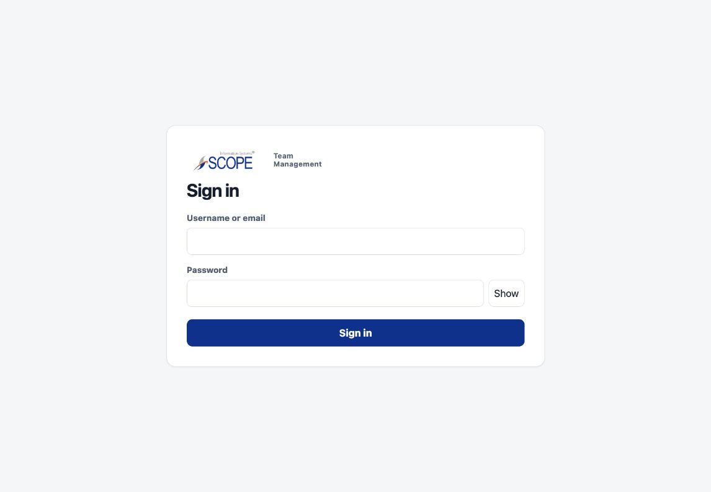
Step 1: Sign in and required password change · fictional local data · click to inspect original
STEP 02
Role dashboard and navigation
Works · prioritization needs improvementThe Admin dashboard contains scoped operational counts and access to relevant work. The page spends substantial space explaining metrics before showing decisions and next actions. Repeated “Open” links require nearby context.
Follow-up / evidence limit: Put today’s assignments, pending decisions and coverage exceptions first. Give links task-specific names. Group navigation by work rather than treating every module as equally important.
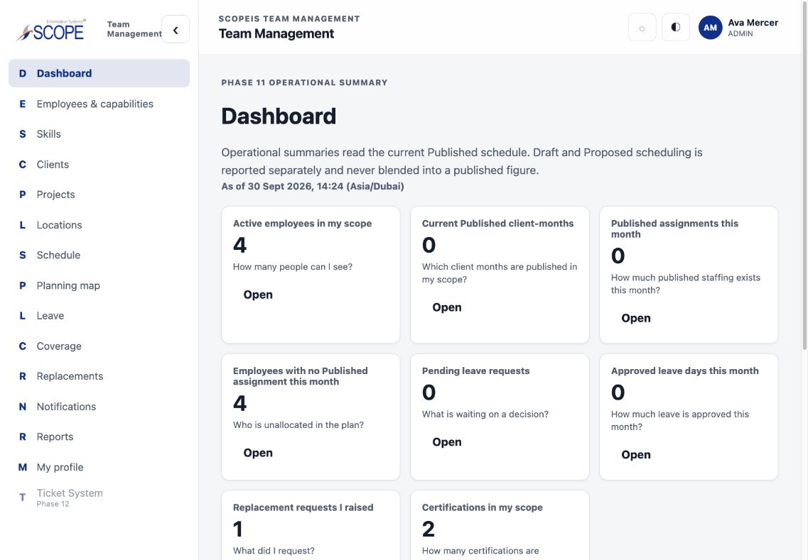
Step 2: Role dashboard and navigation · fictional local data · click to inspect original
STEP 03
Employee directory and account administration
Fixed · core journeys verifiedThe workforce directory separates system roles from designation and arrangement. Account filters now retain search and pagination state; resets follow the documented password policy, including inactive Super Admin targets. The original account screen had poorly grouped controls and duplicate timezone text; both were corrected.
Follow-up / evidence limit: Explain “workforce record” versus “login account” in one guided entry path so managers do not accidentally create duplicates. This screenshot is the baseline directory, not the repaired account form.
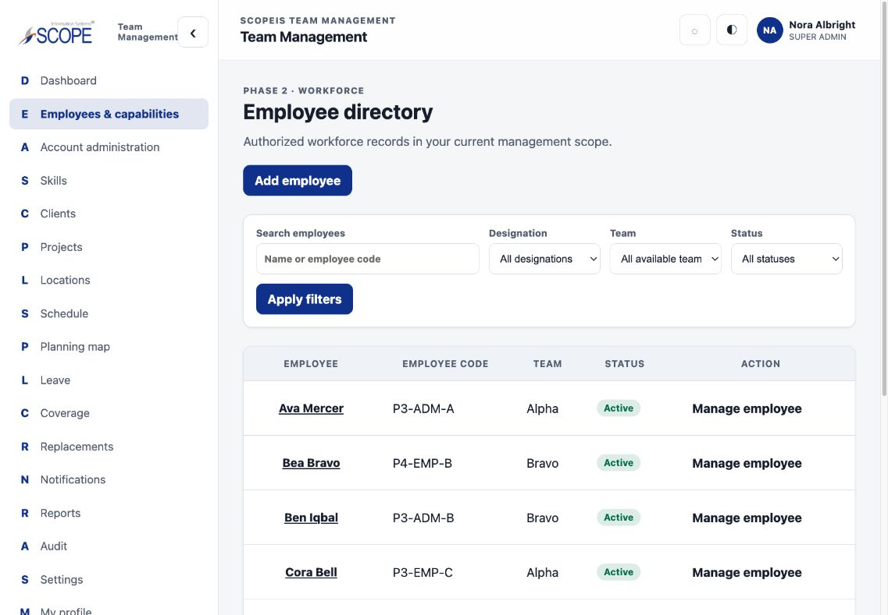
Step 3: Employee directory and account administration · fictional local data · click to inspect original
STEP 04
Clients, projects and locations
Works · creation dominates browsingThe hierarchy is coherent, and automated journeys cover scoped edits, lifecycle and privacy. The initial Client screen puts a long creation form ahead of existing records.
Follow-up / evidence limit: Show current clients first and open creation on demand. Carry selected client/project context between pages. Project and Location mutations were covered by automated journeys; separate manual screenshots of every detail/edit state were not captured.
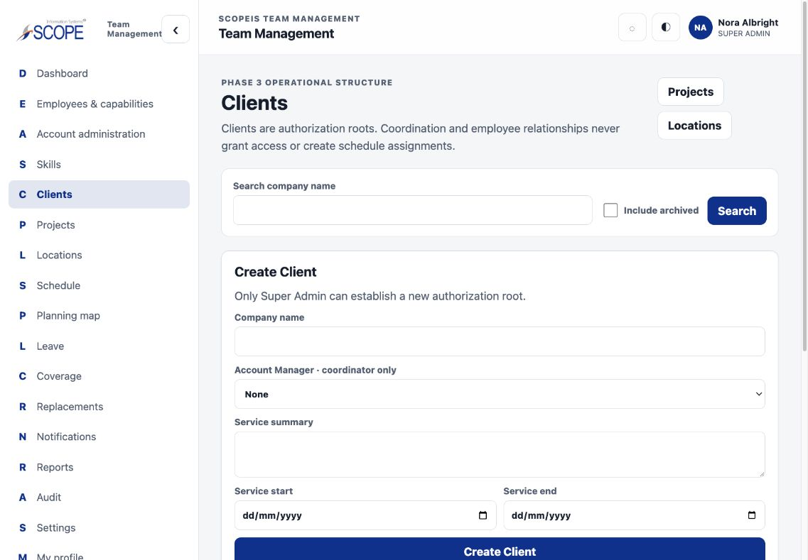
Step 4: Clients, projects and locations · fictional local data · click to inspect original
STEP 05
Draft → review → publish → revise schedules
Partially resolved · one blocking edge caseRepairs cover time normalization during proposal, copied-assignment provenance, copied skill requirements, source/destination authority and obsolete publication overlaps. Published truth remains separate from planning.
Follow-up / evidence limit: An assignment with retained skill requirements or replacement references cannot be removed from a Draft/revision. It now returns a clear conflict instead of an unhandled database error, but cancelled work still cannot complete this path. See the priority finding below. Add a team/week timeline and direct month selection before expanding scheduling complexity.
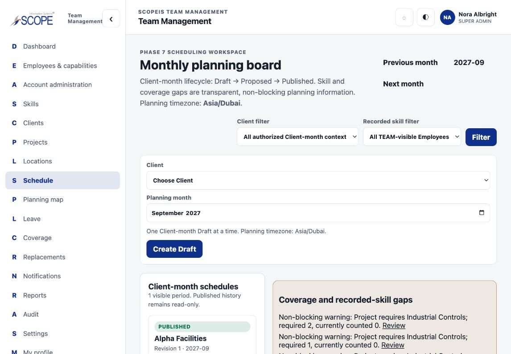
Step 5: Draft → review → publish → revise schedules · fictional local data · click to inspect original
STEP 06
Employee leave and Super Admin review
Fixed · annual calculations verifiedFuture-year and cross-year requests now validate against each affected calendar year; approved leave is not subtracted twice in review. Current-year balance labels are explicit. Approval authority remains Super Admin-only.
Follow-up / evidence limit: This mobile screenshot predates the year-label correction. Decide how allowance changes should affect already-approved future leave; the present current-year setting rule was preserved. Half-days, holidays and carryover must remain explicit policy decisions.
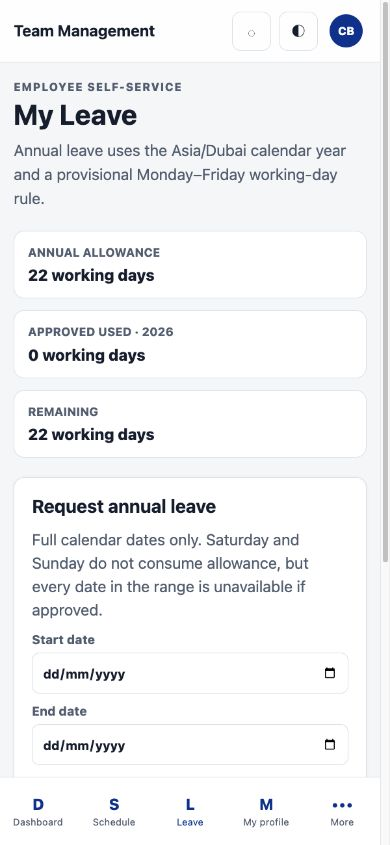
Step 6: Employee leave and Super Admin review · fictional local data · click to inspect original
STEP 07
Coverage review
Fixed errors · entry flow still weakFailed/refused reviews no longer masquerade as “no coverage gaps.” TEAM visibility and active Employee eligibility are enforced. The page now offers a path back to the schedule.
Follow-up / evidence limit: Replace the internal Assignment ID field with a human-readable picker or a direct “Review coverage” entry from each assignment. The screenshot shows the original lookup layout.
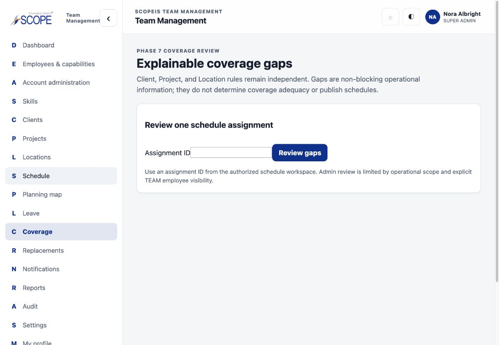
Step 7: Coverage review · fictional local data · click to inspect original
STEP 08
Replacement request and decision
Works · decision context is too sparseThe request/decision mechanism preserves Super Admin decision authority and Draft-only effects. Automated tests cover scope, stale state, conflicts and rollback.
Follow-up / evidence limit: Show employee, date/time, client/project/site, required skills and the proposed before/after change on each decision card. Explain an empty candidate list. A decision should not depend on opening multiple other modules.
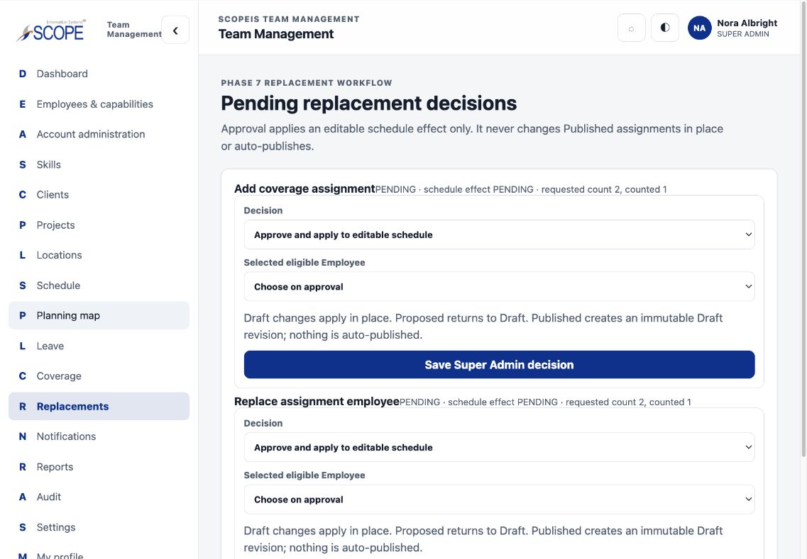
Step 8: Replacement request and decision · fictional local data · click to inspect original
STEP 09
Static planning map
Fixed · geometry and filters verifiedTiles, markers, association lines, zoom and drag now use the same Web Mercator projection. Blank optional filters and non-UUID employee IDs work. This scoped Admin screenshot shows the fixture’s one authorized worksite and Published assignment.
Follow-up / evidence limit: The manual fixture had no eligible employee coordinate markers; employee-marker projection and drag are covered by tests. Keep the list fallback and stored-planning language. Do not turn this into employee tracking.
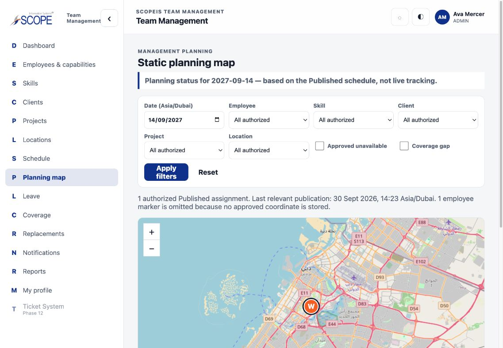
Step 9: Static planning map · fictional local data · click to inspect original
STEP 10
Profile, skills and private evidence
Fixed · preserve verification on unchanged saveAn unchanged evidence submission no longer clears review/verification provenance or emits redundant audit/notifications. Material edits still reset provenance. Automated journeys cover private file access and role-safe summaries.
Follow-up / evidence limit: Separate profile facts, certifications, CV and project evidence into concise sections with on-demand forms. Update the profile introduction so it does not imply only three fields are editable when evidence controls follow. Do not automatically turn verified evidence into staffing eligibility without the deferred decision.
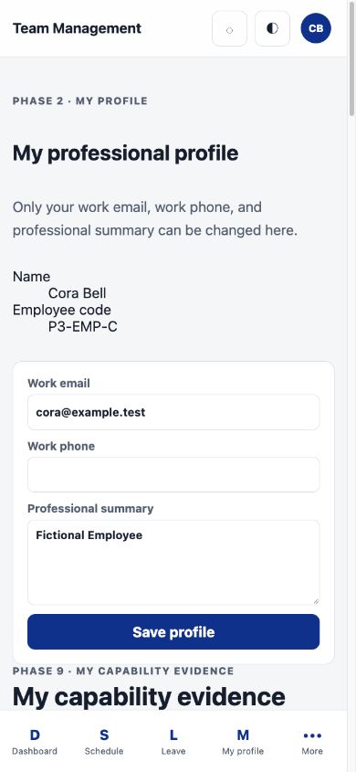
Step 10: Profile, skills and private evidence · fictional local data · click to inspect original
STEP 11
Reports and CSV exports
Fixed · filters, calculations and refusal feedback verifiedOptional filters no longer cause a 404. Filters affect totals and exports; selected values survive navigation. Client-scoped users receive descendant Project/Location choices without broadening direct grants. Aggregation and pagination no longer silently truncate source data. Export limits return actionable errors. The final screenshot shows the repaired controls; its visible CSV action and inherited choices were checked manually after rebuilding.
Follow-up / evidence limit: Prefer plain task labels over “Phase 11” and “grain.” Dense desktop report columns still wrap words awkwardly; give columns readable minimum widths and retain the accessible scroll region. Keep Published versus unpublished planning explicit. Assignment reports intentionally follow operational scope; the map’s stricter TEAM × operational policy must not be silently applied to every report.
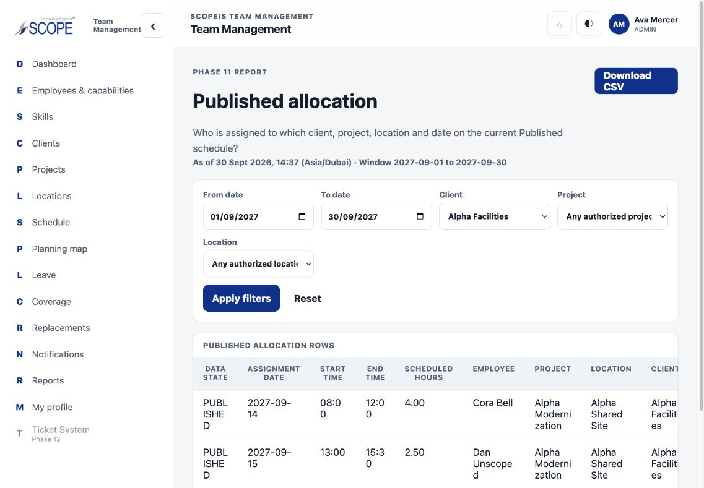
Step 11: Reports and CSV exports · fictional local data · click to inspect original
STEP 12
Notifications, discussions, audit and mobile navigation
Core journeys verified · usability follow-upsRecipient ownership, participant discussion access, private management notes and Super Admin-only audit are exercised by automated tests. Safe export-refusal reasons are retained without logging free text. The skip link is first; mobile menu keyboard handling was repaired.
Follow-up / evidence limit: Notification destinations should open the exact authorized record, not just its module. Make displayed timezone consistent. Full assistive-technology, contrast, RTL and real-device testing is still outstanding.
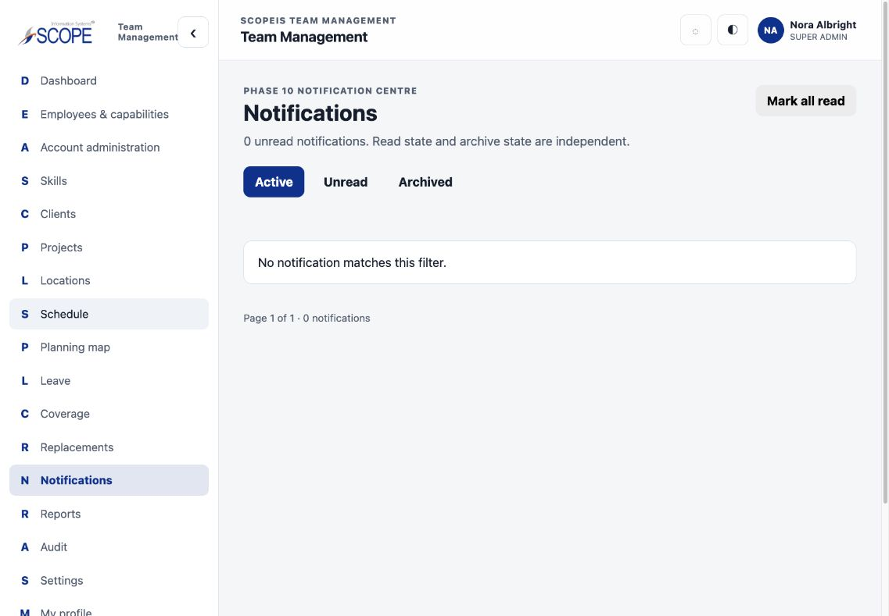
Step 12: Notifications, discussions, audit and mobile navigation · fictional local data · click to inspect original
STEP 13
Settings and Ticket boundary
Settings incomplete · Ticket integration not validated hereSettings is visibly a scaffold rather than a finished task. The checked application has a disabled Ticket entry. The user reports that separate Ticket work is nearly done; that integration was not available in this checkout for end-to-end verification.
Follow-up / evidence limit: Hide unfinished settings or label them clearly until useful. Validate Ticket identity mapping, scope, failure recovery and duplicate prevention when the integration is available. Preserve the team-management product as the system of record for its own domains.
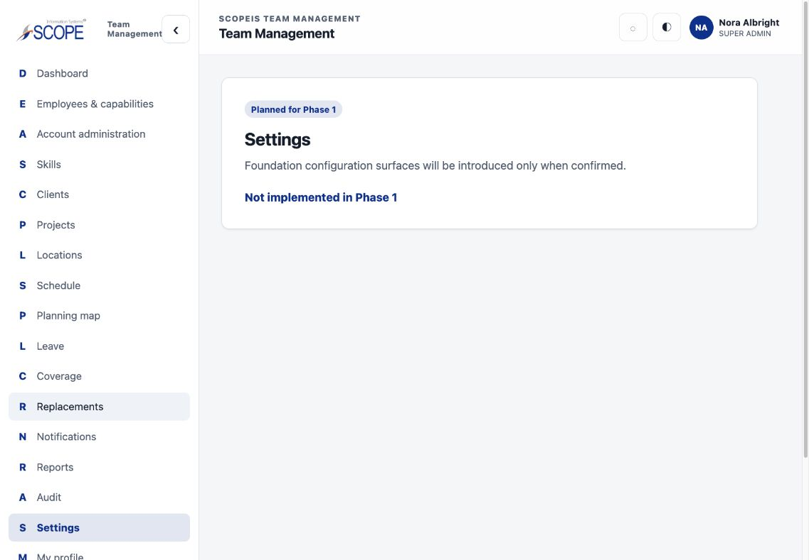
Step 13: Settings and Ticket boundary · fictional local data · click to inspect original
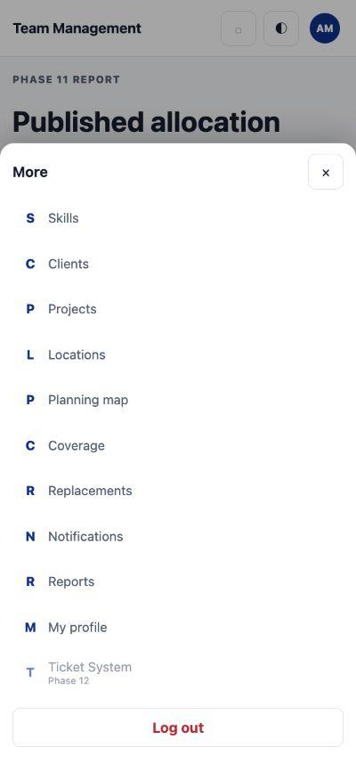
Step 12 follow-up: repaired mobile menu; focus enters Close and Escape returns focus to More · fictional local data · click to inspect original